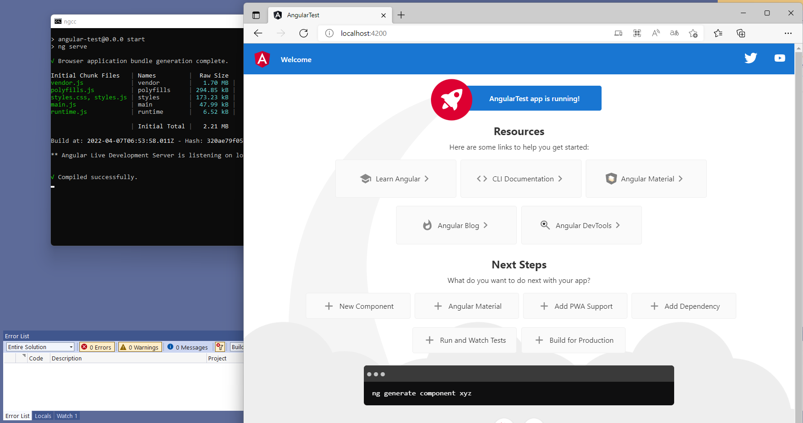
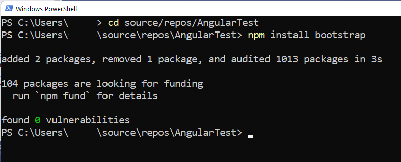
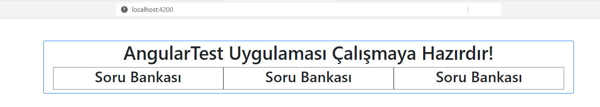

Projeyi Oluşturmak
Bu projenin bazı aşamalarında Angular CLI (komut arabirimi) kullanacağım,
ama projeyi onunla oluşturmadım.
Visual Studio ortamını proje organizasyonunu gözden kaçırmadan
kod dosyalarını düzenlemek için kullanacağım.
Proje şablonu olarak, Web platformu kategorisinden
Standalone Angular şablonunu seçtim.
Projeyi Çalıştırmak

Visual Studio ortamından ayrılmadan,
az önce uygulama başlatıcısı olarak tarayıcıyı seçtiğim
düğmeyi tıklayarak uygulamayı çalıştırdım.
Bir süre sonra geri planda açılan komut penceresinde
ng serve komutunun çalıştırıldığını gördüm.
Ekrana otomatik gelen tarayıcı penceresi
localhost:4200 adresinden Angular uygulamasının
geçici ilk şablonunu görüntüledi.
Visual Studio ortamında çalışırken uygulamayı kapattığımda
tarayıcı penceresi kapanıyor ama komut penceresi açık kalıyor,
onu ayrıca kapatmam gerekiyordu.
Ben yerel sunucuyu Visual Studio Terminal penceresinden açtığım
Powershell komut arabiriminden çalıştırmayı tercih ettim.
Uygulama sayfasına da normalde kullandığım tarayıcıda
localhost:4200 adresinden eriştim.
Böylelikle, Visual Studio ortamında yaptığım kod düzenlemelerinin
sonuçlarını tarayıcıda açık kalan uygulama sayfasında görebiliyordum.
Projeye npm Modülü Eklemek

Bu uygulamanın web arayüzünde bootstrap kullanmaya karar vermiştim.
Bu eklemeyi Powershell arabiriminde proje klasörüne inip,
npm install bootstrap
komutunu çalıştırarak yaptım.
Proje öğelerinin (components) html görünümlerinde
Bootstrap stillerini kullanabilmek için,
projenin angular.json dosyasına
bootstrap stil ve skript dosyalarının referanslarını ekledim:
"styles": [
"node_modules/bootstrap/dist/css/bootstrap.min.css",
"src/styles.css"
],
"scripts": [
"node_modules/bootstrap/dist/js/bootstrap.bundle.min.js"
]
Projenin uygulama öğesine ait
app.component.html
dosyasındaki geçici içerik şablonunu silip,
yerine aşağıdaki deneme içeriğini yerleştirdiğimde
bootstrap stillerinin beklediğim görünümü sağladığını gördüm.
<div class="container border border-primary rounded mt-5">
<h1 class="text-center">{{title}} Uygulaması Çalışmaya Hazırdır!</h1>
<div class="row m-2">
<div class="col border border-secondary">
<h2 class="text-center">Soru Bankası</h2>
</div>
<div class="col border border-secondary">
<h2 class="text-center">Soru Bankası</h2>
</div>
<div class="col border border-secondary">
<h2 class="text-center">Soru Bankası</h2>
</div>
</div>
</div>

Angular Projesine Kodlar Eklemek
Soru Bankasını Temsil Edecek Testbank Sınıfı
Artık projeye işlerlik kazandırma zamanı gelmişti.
Visual Studio ortamında açtığım terminal penceresinde aşağıdaki komutu çalıştırarak,
uygulamayla oluşturulacak soru bankalarını temsil edecek yeni bir sınıf (class) ekledim.
ng generate class Testbank
Bu komutla projeye eklenen testbank.ts dosyasındaki sınıf tanımı
uygulama çalışırken oluşturulup düzenlenecek bir soru bankasını temsil edecekti.
Bu kod dosyasındaki sınıf tanımına, temsil edeceği soru bankasına ait
kimlik (id), isim (name) ve açıklama (description)
bilgilerini saklayacak üye değişken tanımları koydum:
private id: Guid;
public name: string;
public description: string;
Farklı kullanıcıların bilgisayarlarından gelmiş olan
soru bankalarının bile ayırt edilmesini sağlasın diye,
Guid yani uzun bir tamsayı türünden
bir kimlik bilgisi olmalıydı.
Bu veri türünü kullanabilmek için, npm ile
ilgili modülü projeye ekledim:
npm install guid-typescript --save
testbank.ts kod dosyasına bu yeni modülün referansını ekledim
ve sınıf tanımındaki kurucu fonksiyonla her yeni nesneye ayırt edici
bir kimlik olarak yeni bir Guid değeri atayacak komutu ekledim:
import { Guid } from 'guid-typescript';
export class Testbank {
private id: Guid;
public name: string;
public description: string;
constructor() {
this.id = Guid.create();
this.name = "Testbank " + this.id.toString().split('-')[0];
this.description = "Testbank description";
}
}
Bu kurucu fonksiyonda soru bankasının adını Guid bilgisiyle
oluşturacak ve jenerik bir açıklama ekleyecek atamaları da eklemiştim.
toString() fonksiyonu ile Guid türü
kimlik bilgisi karakter dizgisine dönüştürmüştüm.
Sonuç metnini de '-' karakterlerinin gözüktüğü yerlerden
ayırmak için split() fonksiyonunu kullandım.
Bu fonksiyonun sonuçta oluşturduğu karakter dizgileri dizisinin
[0] numaralı ilk elemanı kimlik bilgisinin ilk kısmı
olarak soru bankası adına ekledim.
Daha ileriki aşamalarda soru bankasının adını belirlemek
kullanıcıya bırakılacaktır; bu kodlar geçici ad belirlemek içindi.
Soruyu Temsil Edecek Question Sınıfı
Bu uygulamanın oluşturacağı soru bankalarında,
metin biçimlendirmeye ve web sayfalarındaki temel düzey öğeleri
yerleştirme imkanı verecek HTML içeriği olan sorular olacak.
Dolayısıyla, bir soruyu temsil edecek sınıfı yine
ng generate class Question
komutuyla oluşturdum ve sınıf kod dosyasını başlangıçta
aşağıdaki gibi düzenledim:
import { Guid } from 'guid-typescript';
export class Question {
private id: Guid;
public htmlContent: string;
constructor() {
this.id = Guid.create();
this.htmlContent = "Question " + this.id.toString().split('-')[0] + "";
}
}
testbank.ts kod dosyasındaki sınıf tanımına da,
bir soru bankasının içereceği sorular dizisi
ve herhangi bir anda seçili sorunun referansını
saklayacak özellik tanımını ekledim:
import { Guid } from 'guid-typescript';
import { Question } from './question';
export class Testbank {
private id: Guid;
public name: string;
public description: string;
public questions: Array;
public selectedQuestion: Question | undefined;
constructor() {
this.id = Guid.create();
this.name = "Testbank " + this.id.toString().split('-')[0];
this.description = "Testbank description";
this.questions = [];
}
addQuestion() {
this.questions.push(new Question);
}
selectQuestion(que: Question) {
this.selectedQuestion = que;
}
}
Bu sınıf tanımındaki addQuestion() fonksiyonu
soru bankasına yeni sorular eklenmesini sağlayacakt,
selectQuestion() fonksiyonu da referansı gönderilen
bir soru nesnesini seçili olarak işaretleyecektir.
Seçeneği Temsil Edecek Choice Sınıfı
Çoktan seçmeli soruların alt kısmında yer alacak seçenekleri
temsilen oluşturduğum Choice sınıfının tanımı
son derece basitti:
export class Choice {
public htmlContent: string;
constructor() {
this.htmlContent = '<i>choice<i>';
}
}
Bir sorudaki seçenekler o soruya ait olacakları için
bir sorudan diğerine veya bir soru bankasından diğerine
transfer edilmeleri söz konusu değildi.
Bu nedenle ayırt edici bir Guid kimliğine gerek yoktu.
Yalnızca biçimlendirilebilir bir metin içeriği olsun
diye, htmlContent diye bir özellik yeterliydi.
Tabi, bir soruda olacak seçenekleri temsilen,
Question sınıfı tanımında
bu Choice sınıfı türünden bir dizi tanımı
ve herhangi bir anda seçili olan seçeneğin
referansını saklayacak bir değişken tanımı da ekledim:
import { Guid } from 'guid-typescript';
import { Choice } from './choice';
export class Question {
private id: Guid;
public htmlContent: string;
public choices: Array;
public selectedChoice: Choice | undefined;
constructor() {
this.id = Guid.create();
this.htmlContent = "Question " + this.id.toString().split('-')[0] + "";
this.choices = [];
}
addChoice() {
this.choices.push(new Choice);
}
selectChoice(cho: Choice) {
this.selectedChoice = cho;
}
deleteChoice(cho = this.selectedChoice) {
if (cho) {
let index = this.choices.indexOf(cho, 0);
if (index > -1) {
this.choices.splice(index, 1);
}
}
}
}
Angular Projesine Görselleştirici Öğeler Eklemek
Yukarıda oluşturduğumuz sınıflar temsil ettikleri nesnelerin
(soru bankası, soru, seçenek) bilgilerini saklayacaktır,
ama bunlardan biri seçildiği zaman, seçili nesneye ait
ayrıntıları görüntüleyecek görselleştirici öğelere gerek vardır.
Bunların kodlarına projeden bakabilirsiniz.
Burada yalnızca öğelere ait .ts uzantılı kod dosyaları
ve asıl görüntüleme işini yapan html dosyalarından
bazı önemli ayrıntıları özetleyeceğim.
-
Uygulamayı Görselleştirecek App Öğesi
Bu öğenin app.component.tskod dosyasındaki
testbanks özelliği listelenecek soru bankaları dizisini,
selectedTestbank ise ayrıntılarını düzenlemek
için seçilen soru bankasının referansını saklamak içindir.
Uygulama görünümünü oluşturacak
app.component.html dosyasında,
sol sütunda (<div class="col-lg-4">)
soru bankaları dizisinin elemanlarını
Bootstrap card öğeleri olarak listelettim:
<div *ngFor="let tb of testbanks" class="card border border-primary mt-1 mb-1" (click)="selectTestbank(tb)"
[class.selected]="tb === selectedTestbank">
<div class="card-header"><h2>{{tb.name}}</h2></div>
<div class="card-body">{{tb.description}}</div>
</div>
-
Yine app.component.html dosyasında,
sağ sütunda seçili soru bankasını görüntüleyecek öğeyi yerleştirdim:
<div class="col-lg-8" *ngIf="selectedTestbank">
<app-testbank-detail [displayTestbank]="selectedTestbank"></app-testbank-detail>
</div>
Yukarıdaki html blokundaki ngIf ifadesiyle,
soru bankası ayrıntılarının
ancak bir soru bankası seçilmişse
görüntülenmesini sağladım.
-
Sol sütundaki soru bankaları listesinde seçili soru bankasına ait
card bölümüne özel bir stil uygulamak için
[class.selected]="tb === selectedTestbank"
koşul ifadesini kullanmıştım.
Bu ifadededeki === kontrolü ile
ile kart bölümlerinde görüntülenen soru bankası nesnesinin
referansı seçili soru bankası referansıyla karşılaştırılıyor,
sonuç olumluysa, projenin styles.css dosyasındaki
selected stil tanımı uygulanıyordu.
Sağ sütunda ise görüntülenecek soru bankası referansını
seçili soru bankası referansına eşitlemek için
[displayTestbank]="selectedTestbank"
ifadesini kullandım.
-
Seçili Soru Bankasını Görselleştirecek TestbankDetail Öğesi
Bu öğenin testbank-detail.component.ts kpod dosyasında
görüntülenecek soru bankasının referansını saklamak için
@Input() displayTestbank: Testbank | undefined;
değişken tanımı var.
Bu değişkende saklanacak referans,
bir önceki maddede gösterdiğim gibi,
uygulama görselleştiricisindeki
seçili soru bankası referansından aktarılıyor.
-
Bu öğenin görselini oluşturan testbank-detail.html
dosyasında gördüğümüz gibi, üst kısımda görüntülenen
soru bankasının isim ve açıklama bilgilerini düzenleme
imkanı veren form öğeleri var:
<div class="row border border-primary rounded">
<input type="text" class="form-control" [(ngModel)]="displayTestbank.name"/>
<textarea class="form-control" [(ngModel)]="displayTestbank.description" rows="3">
</textarea>
</div>
Daha üstteki bir gezinti çubuğunda (navbar)
tıklanınca soru eklemek/silmek için düğme kontrolleri,
altta ise sorular listesini görüntüleyecek bir bölme var:
<div class="row mt-2 mb-2">
<div *ngFor="let que of displayTestbank.questions" class="card border border-primary mt-1 mb-1" (click)="displayTestbank.selectQuestion(que)"
[class.selected]="que === displayTestbank.selectedQuestion">
<div class="card-body" [innerHTML]="que.htmlContent">
</div>
<div class="card-footer row">
<div *ngFor="let cho of que.choices; index as i" class="{{que.colClass}}" [innerHTML]="cho.htmlContent"></div>
</div>
</div>
</div>